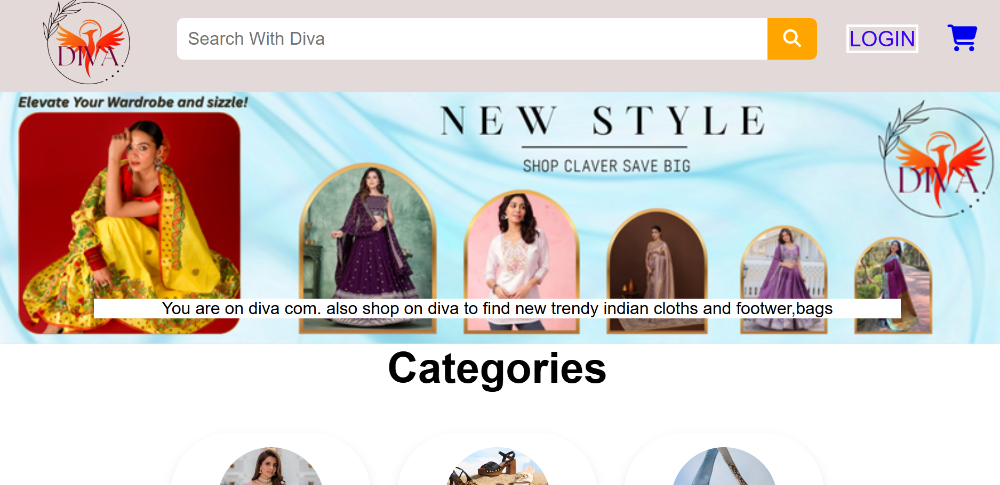
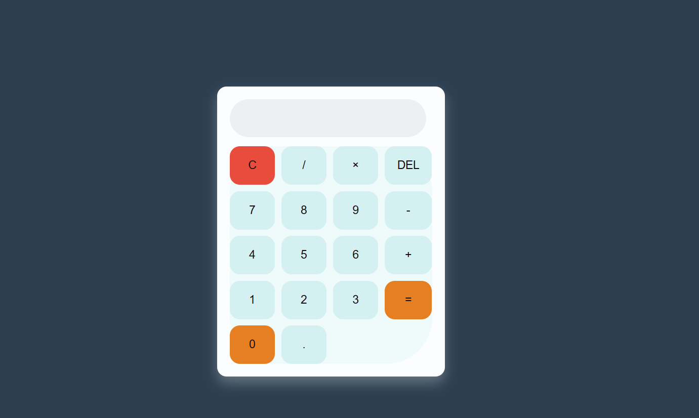

Third Year BCA Student & Tech Enthusiast
Hi, I am currently in my Third year of BCA. While my college lectures focus on core computer science theories like Database Management (DBMS) I use my free time to self-learn modern web development. I am actively building mini-projects to take my coding skills out of college lab files and bring them to life on the web.

I personally developed this e-commerce website using HTML5, CSS3, and JavaScript. While building it in VS Code, I faced challenges in achieving a fully responsive layout across different screen sizes, which I successfully resolved by using CSS media queries.

This calculator was built using HTML, CSS, and JavaScript. It was developed using VS Code, and the main challenges were achieving precise CSS Grid alignment and implementing the calculation logic correctly.
Check out my full professional background.
Download PDF ResumeEmail: kashishmohite7@gmail.com